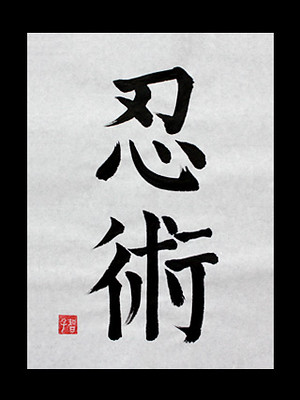

El método de la Bujinkan se llama Bujinkan Budō Taijutsu (武神館武道体術) y es una colección de nueve linajes
marciales antiguos, conocidos como ryūha. Anteriormente se llamó Bujinkan Ninpō Taijutsu, pero es conocido
también con el nombre genérico de Ninjutsu (técnicas y tácticas utilizadas por los Ninja).
El honbu dōjō (dojo principal) de la Bujinkan está en las afueras de Noda, en la prefectura de Chiba, en Japón.
Es un arte marcial de origen Japonés, su fundamento principal es la efectividad
en la defensa personal y la supervivencia. Entre las características basicas estan
las de aprender a utilizar el cuerpo como un arma.
Es un arte marcial NO UN DEPORTE MARCIAL
Bujinkan Budô TaiJutsu es una organización compuesta por 9 tradiciones, también llamadas escuelas, marciales (RyûHa).
Fue fundada en la década de los años 70’s del siglo pasado, por el actual Sôke Dr. Hatsumi Masaaki,
quién la bautizó con este nombre en honor a su mentor, Takamatsu Toshitsugo, mejor conocido como el
“Tigre de Mongolia”, quién desde niño comenzó a estudiar artes marciales bajo la tutela de su abuelo,
el Maestro Toda Shinryuken Masamitsu, jefe de familia con Herencia Samurai.
La Casa del Guerrero Sagrado
La fundación de la escuela Bujinkan se produce alrededor de principio de la década de 1970. Esta organización enseñó y defendió las filosofías y técnicas de las nueve escuelas aprendidas por Hatsumi a través de sus principales maestros (Takamatsu y Soke) salvando las antiguas tradiciones del ninjitsu japonés en nuestra época moderna.
Una característica resaltante de esta organización fundada por Hatsumi es que no participan en competiciones ni torneos ya que el espíritu de unos verdaderos artistas marcial no reside en la competitividad. Ya que el principal objetivo de las artes marciales es la supervivencia en la guerra o en los combates. Este hecho fue siempre defendido por Hatsumi. Actualmente la escuela continúa formando una gran cantidad de artistas marciales que han viajado por todo el mundo expandiendo los conocimientos de Hatsumi.
El Bujinkan es el dōjō de Hatsumi Masaaki, el sōke (maestro, director) número 34 de la escuela Togakure de ninpō (las artes marciales de los ninjas), la cual se supone cuenta con 900 años de historia. A partir de los fundamentos de la escuela Togakure, Hatsumi enseña un tipo de ninjutsu (ninpō) que incorpora elementos de varias artes marciales antiguas. El día que visitamos el Bujinkan se habían reunido cerca de cien discípulos en la zona de entrenamiento, de apenas 50 tatamis de extensión (unos 165 metros cuadrados).
“Hai, play (a jugar)”, dice Hatsumi, y los discípulos se emparejan para tratar de imitar la técnica recién aprendida. “Aquí yo no enseño con palabras. Creo que es más efectivo que les muestre mis movimientos y que ellos aprendan viéndome, en lugar de escucharme. Por supuesto, las katas (los movimientos establecidos por cada escuela de artes marciales), que son algo fundamental, sí que las enseño. Pero por muy bien que haga uno las katas, con eso solo no es suficiente”. Acerca de las técnicas ninja, Hatsumi declara: “El ninjutsu no es un deporte. Es una serie de técnicas para sobrevivir. No cuenta con una sola regla”.

El ninjutsu (忍術), también conocido como shinobi-jutsu, y como ninpō (忍法), es el arte marcial japonés del espionaje y la guerrilla.
Este arte marcial, se basa en grupos de técnicas y tácticas (consideradas clásicamente 20, mencionadas más adelante) que han utilizado supuestamente los ninja durante siglos. Los primeros datos que se tienen de la utilización de ninjas en el campo de batalla data del siglo v, lo que nos da una idea de la antigüedad de este estilo de lucha, que se complementaba con el aprendizaje de muchas habilidades útiles para el espionaje, como la caracterización o falsificación de documentos, así como ciertas prácticas esotéricas derivadas del Mikkyo, budismo esotérico japonés.
Con la llegada de Oda Nobunaga, los ninja fueron perseguidos en un intento de detener su creciente influencia y poder. Aunque esto provocó que algunos clanes ninja se extendiesen por todo Japón al tener que huir de Iga. Ya en el siglo xvii se utilizaron por última vez de forma masiva en la revuelta cristiana de Kyushu en 1637. A mediados y fines del período Edo, comienza el declive en el uso de los shinobi, dado el largo período de paz establecido por la familia Tokugawa. Entre los siglos XVII y XIX se prohibió legalmente el uso de los mercenarios ninja, lo que hizo que se utilizaran de forma clandestina y a escala pequeña.
En el siglo xx Japón utilizó el ninjutsu como forma de entrenamiento de sus tropas de élite.No obstante eran tropas regulares dotadas de un entrenamiento especial, sin que se pueda llegar a considerarlos verdaderos ninjas. El último registro real sobre el empleo de los ninja por parte del gobierno japonés data de la segunda guerra mundial (1939-1945).
EMPERADOR HIROHITO (1901-1989)